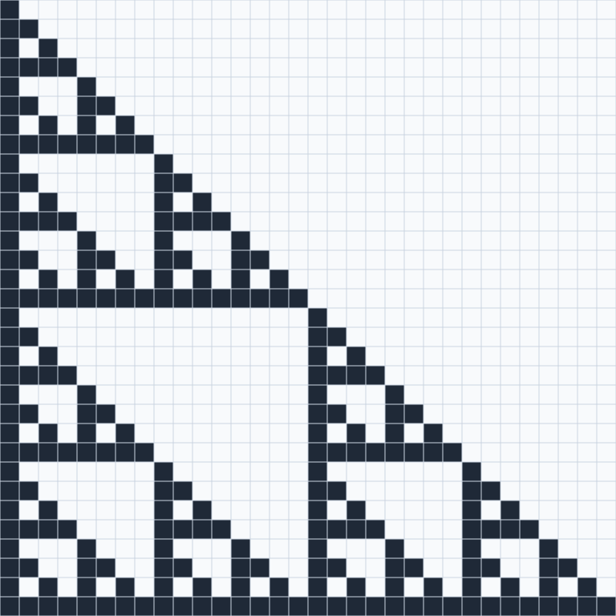
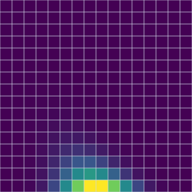
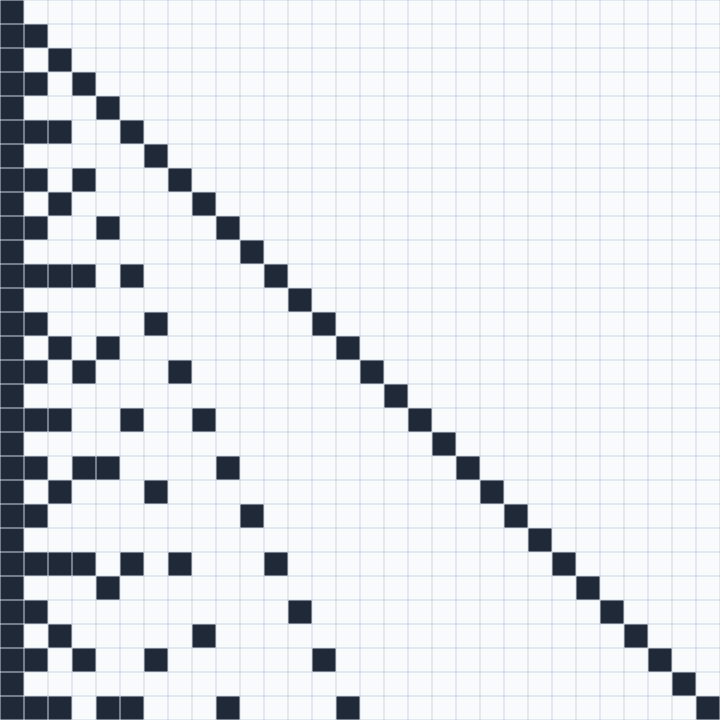
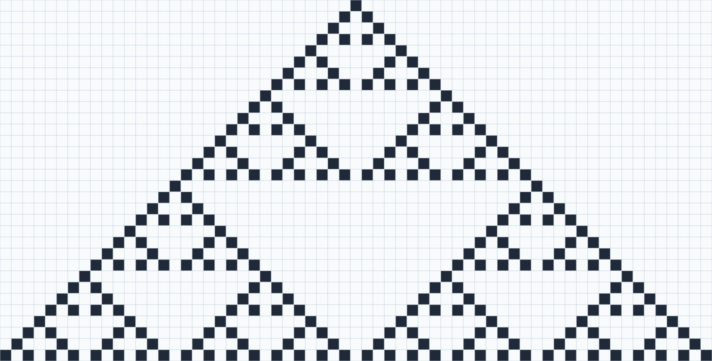
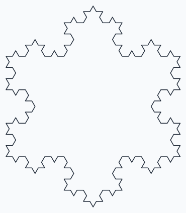

Classic APL programs, drawn
Pascal's triangle, Life and turtle graphics in X_eTaL, with their pictures
Table of Contents
APL has been taught with the same handful of programs for decades.
This document walks through some of them in X_eTaL, and draws them.
Every block below is run by xetal through ob-xetal, and its result
recorded under it; a block that draws saves its picture beside this
document, and the picture is shown in its place. Pictures with frames
are animations: on the web page they play by themselves.
Drawing is two built-ins. []G_RID turns an array into a picture (an
SVG document, returned as text): a matrix is a grid of cells, and a
rank-3 array is frames shown in turn. []P_ATH joins points, given as
two rows (x over y). []S_HOW shows a picture. The programs themselves
are in demos/classics/.
Pascal's triangle
Each row of Pascal's triangle is the row before it added to itself
shifted one place. Kept at a fixed width with zeros on the right,
rotating a row one place toward the back (-1 o_-) shifts it right,
and the zero that wraps round to the front keeps it a shift.
ᵘn̲ext ← { ⍵ + -1 o̲- ⍵ } ᵘn̲ext 1 0 0 0 0 ⍝ typed: ⍝ u:n_ext := { _r + -1 o_- _r } ⍝ u:n_ext 1 0 0 0 0
1 1 0 0 0
Every row at once: n u:r_ows r stacks r and the rows after it, one
per row of a matrix (c_at joins a vector to a matrix as a row).
ᵘr̲ows ← { n r → n = 1 ? (1 c̲at s̲hape r) r̲eshape r r c̲at (n − 1) ᵘr̲ows ᵘn̲ext r } 6 ᵘr̲ows 6 t̲ake 1 ⍝ typed: ⍝ u:r_ows := { n r -> ⍝ n = 1 ? (1 c_at s_hape r) r_eshape r ⍝ r c_at (n - 1) u:r_ows u:n_ext r ⍝ } ⍝ 6 u:r_ows 6 t_ake 1
1 0 0 0 0 0 1 1 0 0 0 0 1 2 1 0 0 0 1 3 3 1 0 0 1 4 6 4 1 0 1 5 10 10 5 1
Modulo 2, the rows are Sierpinski's triangle. As cells, the odd numbers dark:
sierpinski ← ⎕S̲HOW ⎕G̲RID (32 ᵘr̲ows 32 t̲ake 1) m̲od 2 ⍝ typed: ⍝ sierpinski := []S_HOW []G_RID (32 u:r_ows 32 t_ake 1) m_od 2

The numbers themselves, colored from the least (dark purple) to the greatest (yellow), for 16 rows:
colors ← ⎕S̲HOW ⎕G̲RID 16 ᵘr̲ows 16 t̲ake 1 ⍝ typed: ⍝ colors := []S_HOW []G_RID 16 u:r_ows 16 t_ake 1

Numbers
The sieve of Eratosthenes keeps no loop over the numbers, only masks: take the first of what is left, a prime, and keep the rest that it does not divide; once a prime squared passes the largest number, everything left is prime.
ᵘs̲ieve ← { v → 0 = t̲ally v ? v p ← f̲irst v (p × p) > 'm̲ax r̲/ v ? v rest ← 1 d̲rop v p c̲at ᵘs̲ieve (w̲here 0 ≠ rest m̲od p) s̲elect rest } ᵘs̲ieve 1 d̲rop r̲ange 60 ⍝ typed: ⍝ u:s_ieve := { v -> ⍝ 0 = t_ally v ? v ⍝ p := f_irst v ⍝ (p * p) > 'm_ax r_/ v ? v ⍝ rest := 1 d_rop v ⍝ p c_at u:s_ieve (w_here 0 != rest m_od p) s_elect rest ⍝ } ⍝ u:s_ieve 1 d_rop r_ange 60
2 3 5 7 11 13 17 19 23 29 31 37 41 43 47 53 59
The APL way asks every question at once: the table of every number's remainder by every number. Where it is 0 the column divides the row, and a prime's row has exactly two such cells. Drawn, the primes are the rows with two dark cells, the diagonal and the first column:
a ← r̲ange 30 divides ← ⎕S̲HOW ⎕G̲RID 0 = a 'm̲od t̲able a ⍝ typed: ⍝ a := r_ange 30 ⍝ divides := []S_HOW []G_RID 0 = a 'm_od t_able a

(w̲here 2 = '+ r̲/₂ 0 = a 'm̲od t̲able a) s̲elect a ⍝ typed: ⍝ (w_here 2 = '+ r_/_2 0 = a 'm_od t_able a) s_elect a
2 3 5 7 11 13 17 19 23 29
Euclid's algorithm is a guard and a recursion, and a dyadic function is an operand like any other, so reduce gives the greatest common divisor of a whole vector:
ᵘg̲cd ← { a b → b = 0 ? a◆ b ᵘg̲cd a m̲od b } 'ᵘg̲cd r̲/ 84 126 210 ⍝ typed: ⍝ u:g_cd := { a b -> b = 0 ? a; b u:g_cd a m_od b } ⍝ 'u:g_cd r_/ 84 126 210
42
The Collatz sequence halves an even number and otherwise triples it and adds one. Asked of every start from 1 to 30 at once, by each:
ᵘh̲ail ← { n → 0 = n m̲od 2 ? n d̲iv 2◆ 1 + 3 × n } ᵘc̲ollatz ← { n → n = 1 ? 1 r̲eshape 1◆ n c̲at ᵘc̲ollatz ᵘh̲ail n } '{ (t̲ally ᵘc̲ollatz ⍵) − 1 } e̲ach r̲ange 30 ⍝ typed: ⍝ u:h_ail := { n -> 0 = n m_od 2 ? n d_iv 2; 1 + 3 * n } ⍝ u:c_ollatz := { n -> n = 1 ? 1 r_eshape 1; n c_at u:c_ollatz u:h_ail n } ⍝ '{ (t_ally u:c_ollatz _r) - 1 } e_ach r_ange 30
0 1 7 2 5 8 16 3 19 6 14 9 9 17 17 4 12 20 20 7 7 15 15 10 23 10 111 18 18 18
Recursion
Some programs stay recursive even in APL. Quicksort is the famous
one: the sorted items below a pivot, the items equal to it, the sorted
items above. The partitions are masks, the selection w_here and
s_elect; there is no loop and no swap.
ᵘq̲sort ← { v → 2 > t̲ally v ? v p ← f̲irst v below ← (w̲here v < p) s̲elect v same ← (w̲here v = p) s̲elect v above ← (w̲here v > p) s̲elect v (ᵘq̲sort below) c̲at same c̲at ᵘq̲sort above } ᵘq̲sort 3 1 4 1 5 9 2 6 5 3 5 ⍝ typed: ⍝ u:q_sort := { v -> ⍝ 2 > t_ally v ? v ⍝ p := f_irst v ⍝ below := (w_here v < p) s_elect v ⍝ same := (w_here v = p) s_elect v ⍝ above := (w_here v > p) s_elect v ⍝ (u:q_sort below) c_at same c_at u:q_sort above ⍝ } ⍝ u:q_sort 3 1 4 1 5 9 2 6 5 3 5
1 1 2 3 3 4 5 5 5 6 9
The Tower of Hanoi: move n - 1 disks out of the way, move the
largest, move the n - 1 back on top. pegs is from, to and the spare,
and each half of the recursion permutes it with s_elect.
ᵘh̲anoi ← { n pegs → n = 0 ? 0 2 r̲eshape 0 first ← (n − 1) ᵘh̲anoi 1 3 2 s̲elect pegs last ← (n − 1) ᵘh̲anoi 3 2 1 s̲elect pegs first c̲at (1 2 r̲eshape 2 t̲ake pegs) c̲at last } 3 ᵘh̲anoi 1 3 2 ⍝ typed: ⍝ u:h_anoi := { n pegs -> ⍝ n = 0 ? 0 2 r_eshape 0 ⍝ first := (n - 1) u:h_anoi 1 3 2 s_elect pegs ⍝ last := (n - 1) u:h_anoi 3 2 1 s_elect pegs ⍝ first c_at (1 2 r_eshape 2 t_ake pegs) c_at last ⍝ } ⍝ 3 u:h_anoi 1 3 2
1 3 1 2 3 2 1 3 2 1 2 3 1 3
To watch it, the state is the peg each disk is on, smallest first; a
move takes the smallest disk on its first peg (where i_ndexOf first
finds that peg) to its second. Each state is drawn as bars, a disk of
size s as wide as 2s - 1 and centered on its peg, by a table of sizes
against offsets from the center.
ᵘm̲ove ← { p m → from ← 1 s̲elect m disk ← p i̲ndexOf from p + ((2 s̲elect m) − from) × disk = r̲ange t̲ally p } ᵘs̲lots ← { p → n ← t̲ally p (r̲ange n) '{ r j → r s̲elect (0 − n) t̲ake 0 c̲at w̲here p = j } t̲able 1 2 3 } ᵘp̲icture ← { p → n ← t̲ally p w ← 1 + 2 × n bars ← (ᵘs̲lots p) '{ s x → s > a̲bs x } t̲able (o̲ffsets w) − n (n c̲at 3 × w) r̲eshape r̲avel bars } ᵘp̲lane ← { m → (1 c̲at s̲hape m) r̲eshape m } ᵘp̲lay ← { p moves → frame ← ᵘp̲lane ᵘp̲icture p 0 = t̲ally moves ? frame frame c̲at (p ᵘm̲ove f̲irst moves) ᵘp̲lay 1 d̲rop moves } ⍝ typed: ⍝ u:m_ove := { p m -> ⍝ from := 1 s_elect m ⍝ disk := p i_ndexOf from ⍝ p + ((2 s_elect m) - from) * disk = r_ange t_ally p ⍝ } ⍝ u:s_lots := { p -> ⍝ n := t_ally p ⍝ (r_ange n) '{ r j -> r s_elect (0 - n) t_ake 0 c_at w_here p = j } t_able 1 2 3 ⍝ } ⍝ u:p_icture := { p -> ⍝ n := t_ally p ⍝ w := 1 + 2 * n ⍝ bars := (u:s_lots p) '{ s x -> s > a_bs x } t_able (o_ffsets w) - n ⍝ (n c_at 3 * w) r_eshape r_avel bars ⍝ } ⍝ u:p_lane := { m -> (1 c_at s_hape m) r_eshape m } ⍝ u:p_lay := { p moves -> ⍝ frame := u:p_lane u:p_icture p ⍝ 0 = t_ally moves ? frame ⍝ frame c_at (p u:m_ove f_irst moves) u:p_lay 1 d_rop moves ⍝ }
Four disks, fifteen moves, sixteen frames (the Tower of Hanoi, three ways also computes these moves curried, with the combinators, and all at once from the bits of the move number):
watched ← ⎕S̲HOW ⎕G̲RID (4 r̲eshape 1) ᵘp̲lay 4 ᵘh̲anoi 1 3 2 ⍝ typed: ⍝ watched := []S_HOW []G_RID (4 r_eshape 1) u:p_lay 4 u:h_anoi 1 3 2
Graphs
A graph is a matrix: 1 where there is an edge from the row's vertex to
the column's. The inner product does the graph algorithms. '| '& (or
of ands) asks whether there is a path through any one vertex, so
repeating it until nothing changes gives every vertex each one can
reach, the transitive closure.
a ← 4 4 r̲eshape 0 1 0 0 0 0 1 0 0 0 0 1 0 0 0 0 ᵘc̲losure ← { r → next ← r ∨ r '∨ '∧ i̲nner r (next m̲atch r) ? r ᵘc̲losure next } ᵘc̲losure a ⍝ typed: ⍝ a := 4 4 r_eshape 0 1 0 0 0 0 1 0 0 0 0 1 0 0 0 0 ⍝ u:c_losure := { r -> ⍝ next := r | r '| '& i_nner r ⍝ (next m_atch r) ? r ⍝ u:c_losure next ⍝ } ⍝ u:c_losure a
0 1 1 1 0 0 1 1 0 0 0 1 0 0 0 0
Warshall's algorithm takes the vertices one at a time: everything that
reaches k now reaches everything k reaches. Column k against row k, as
a table of ands, is exactly those new paths. Eight vertices in two
cycles, the first joined to the second one way, drawn after each
vertex is taken in (u:p_lane, from the Hanoi section, makes a
matrix one frame):
ᵘw̲arshallSteps ← { r k → k > t̲ally r ? ᵘp̲lane r through ← (k s̲elect₂ r) '∧ t̲able k s̲elect r (ᵘp̲lane r) c̲at (r ∨ through) ᵘw̲arshallSteps k + 1 } g ← 8 8 r̲eshape 0 1 0 0 0 0 0 0 0 0 1 0 0 0 0 0 1 0 0 1 0 0 0 0 0 0 0 0 1 0 0 0 0 0 0 0 0 1 0 0 0 0 0 0 0 0 1 0 0 0 0 0 0 0 0 1 0 0 0 0 1 0 0 0 ⍝ typed: ⍝ u:w_arshallSteps := { r k -> ⍝ k > t_ally r ? u:p_lane r ⍝ through := (k s_elect_2 r) '& t_able k s_elect r ⍝ (u:p_lane r) c_at (r | through) u:w_arshallSteps k + 1 ⍝ } ⍝ g := 8 8 r_eshape 0 1 0 0 0 0 0 0 0 0 1 0 0 0 0 0 1 0 0 1 0 0 0 0 0 0 0 0 1 0 0 0 0 0 0 0 0 1 0 0 0 0 0 0 0 0 1 0 0 0 0 0 0 0 0 1 0 0 0 0 1 0 0 0
watched ← ⎕S̲HOW ⎕G̲RID g ᵘw̲arshallSteps 1 ⍝ typed: ⍝ watched := []S_HOW []G_RID g u:w_arshallSteps 1

Change the pair of functions and the same inner product finds the
shortest paths: 'm_in '+, the cheapest way through any one vertex,
repeated (999 stands for no edge).
w ← 4 4 r̲eshape 0 3 999 7 8 0 2 999 5 999 0 1 2 999 999 0 ᵘs̲hortest ← { d → e ← d 'm̲in '+ i̲nner d (e m̲atch d) ? d ᵘs̲hortest e } ᵘs̲hortest w ⍝ typed: ⍝ w := 4 4 r_eshape 0 3 999 7 8 0 2 999 5 999 0 1 2 999 999 0 ⍝ u:s_hortest := { d -> ⍝ e := d 'm_in '+ i_nner d ⍝ (e m_atch d) ? d ⍝ u:s_hortest e ⍝ } ⍝ u:s_hortest w
0 3 5 6 5 0 2 3 3 6 0 1 2 5 7 0
Sequences
Finite differences are almost absurdly natural: each item less the one before is the vector without its first item less the vector without its last. A polynomial's differences become constant at its degree:
ᵘd̲iff ← { v → (1 d̲rop v) − -1 d̲rop v } squares ← (r̲ange 8) ^ 2 ᵘd̲iff squares ᵘd̲iff² squares ⍝ typed: ⍝ u:d_iff := { v -> (1 d_rop v) - -1 d_rop v } ⍝ squares := (r_ange 8) ^ 2 ⍝ u:d_iff squares ⍝ u:d_iff^2 squares
3 5 7 9 11 13 15 2 2 2 2 2 2
A one-dimensional cellular automaton updates every cell at once. Each cell's case is 4 * left + 2 * itself + right, its neighbors found by rotating the row, and the rule number's binary digits say what each of the eight cases becomes. Rule 90 makes each cell the exclusive or of its neighbors, and grows Sierpinski's triangle yet again:
ᵘb̲its ← { rule → (rule d̲iv 2 ^ o̲ffsets 8) m̲od 2 } ᵘs̲tep ← { bits row → (1 + (4 × -1 o̲- row) + (2 × row) + 1 o̲- row) s̲elect bits } ᵘe̲volve ← { bits rows → (t̲ally rows) ≥ t̲ally f̲irst rows ? rows next ← bits ᵘs̲tep r̲avel -1 t̲ake rows bits ᵘe̲volve rows c̲at next } ᵘs̲tart ← { w → (1 c̲at w) r̲eshape ((w d̲iv 2) r̲eshape 0) c̲at 1 c̲at (w − 1 + w d̲iv 2) r̲eshape 0 } ᵘb̲its 90 ⍝ typed: ⍝ u:b_its := { rule -> (rule d_iv 2 ^ o_ffsets 8) m_od 2 } ⍝ u:s_tep := { bits row -> (1 + (4 * -1 o_- row) + (2 * row) + 1 o_- row) s_elect bits } ⍝ u:e_volve := { bits rows -> ⍝ (t_ally rows) >= t_ally f_irst rows ? rows ⍝ next := bits u:s_tep r_avel -1 t_ake rows ⍝ bits u:e_volve rows c_at next ⍝ } ⍝ u:s_tart := { w -> (1 c_at w) r_eshape ((w d_iv 2) r_eshape 0) c_at 1 c_at (w - 1 + w d_iv 2) r_eshape 0 } ⍝ u:b_its 90
0 1 0 1 1 0 1 0
ninety ← ⎕S̲HOW ⎕G̲RID 32 t̲ake (ᵘb̲its 90) ᵘe̲volve ᵘs̲tart 63 ⍝ typed: ⍝ ninety := []S_HOW []G_RID 32 t_ake (u:b_its 90) u:e_volve u:s_tart 63

Data
A histogram counts each distinct value with a table of equals, summed along its rows: here the letters of a sentence that has every letter. Drawn, a column per letter, a to z, as tall as its count:
text ← "the quick brown fox jumps over the lazy dog and the cat" space ← f̲irst " " letters ← s̲ort u̲nique (w̲here text ≠ space) s̲elect text n ← '+ r̲/₂ letters '= t̲able text n ⍝ typed: ⍝ text := "the quick brown fox jumps over the lazy dog and the cat" ⍝ space := f_irst " " ⍝ letters := s_ort u_nique (w_here text != space) s_elect text ⍝ n := '+ r_/_2 letters '= t_able text ⍝ n
3 1 2 2 4 1 1 3 1 1 1 1 1 2 4 1 1 2 1 4 2 1 1 1 1 1
tall ← (r̲ev r̲ange 'm̲ax r̲/ n) '≤ t̲able n shown ← ⎕S̲HOW ⎕G̲RID tall ⍝ typed: ⍝ tall := (r_ev r_ange 'm_ax r_/ n) '<= t_able n ⍝ shown := []S_HOW []G_RID tall
Run-length encoding compares each item with the one before: where they differ a run starts, the item there is the run's item, and the run's length is the distance to the next start.
v ← "aaabccddddde" p ← w̲here 1 c̲at (1 d̲rop v) ≠ -1 d̲rop v p s̲elect v ((1 d̲rop p) c̲at 1 + t̲ally v) − p ⍝ typed: ⍝ v := "aaabccddddde" ⍝ p := w_here 1 c_at (1 d_rop v) != -1 d_rop v ⍝ p s_elect v ⍝ ((1 d_rop p) c_at 1 + t_ally v) - p
abcde 3 1 2 5 1
Life, watched
The rule in one line (docs/literate/life.org builds it up): the
board rotated by every offset in -1 0 1 along both axes and summed
gives each cell plus its neighbors, S; a cell lives next when S is 3,
or when it is alive and S is 4.
ᵘl̲ife ← { ('+ r̲/₁₂ -1 0 1 o̲-₁₂ ⍵) { (⍺ = 3) + ⍵ × ⍺ = 4 } ⍵ } ⍝ typed: ⍝ u:l_ife := { ('+ r_/_12 -1 0 1 o_-_12 _r) { (_l = 3) + _r * _l = 4 } _r }
To watch it, stack the generations as frames: n u:f_rames b is b and
the n - 1 generations after it along a new leading axis, a rank-3
array.
ᵘf̲rames ← { n b → n = 1 ? (1 c̲at s̲hape b) r̲eshape b b c̲at (n − 1) ᵘf̲rames ᵘl̲ife b } ⍝ typed: ⍝ u:f_rames := { n b -> ⍝ n = 1 ? (1 c_at s_hape b) r_eshape b ⍝ b c_at (n - 1) u:f_rames u:l_ife b ⍝ }
A glider in the corner of a 10 by 10 board. Rotation wraps round, so the board is a torus: the glider leaves one edge and comes back at the other, and after 40 generations it is home again.
glider ← 10 t̲ake 10 t̲ake₂ 3 3 r̲eshape 0 1 0 0 0 1 1 1 1 (ᵘl̲ife⁴⁰ glider) m̲atch glider ⍝ typed: ⍝ glider := 10 t_ake 10 t_ake_2 3 3 r_eshape 0 1 0 0 0 1 1 1 1 ⍝ (u:l_ife^40 glider) m_atch glider
1
So 40 frames loop seamlessly:
torus ← ⎕S̲HOW ⎕G̲RID 40 ᵘf̲rames glider ⍝ typed: ⍝ torus := []S_HOW []G_RID 40 u:f_rames glider

Without wrapping, the world ends at its edge. A border of cells kept dead does it: multiplying by a mask of 1s inside and 0s round the edge after every step.
row ← 0 c̲at (10 r̲eshape 1) c̲at 0 mask ← row '× t̲able row ᵘb̲oxed ← { mask × ᵘl̲ife ⍵ } ᵘb̲oxedFrames ← { n b → n = 1 ? (1 c̲at s̲hape b) r̲eshape b b c̲at (n − 1) ᵘb̲oxedFrames ᵘb̲oxed b } start ← -1 o̲- -1 o̲-₂ 12 t̲ake 12 t̲ake₂ 3 3 r̲eshape 0 1 0 0 0 1 1 1 1 '+ r̲/₁₂ ᵘb̲oxed⁴⁰ start ⍝ typed: ⍝ row := 0 c_at (10 r_eshape 1) c_at 0 ⍝ mask := row '* t_able row ⍝ u:b_oxed := { mask * u:l_ife _r } ⍝ u:b_oxedFrames := { n b -> ⍝ n = 1 ? (1 c_at s_hape b) r_eshape b ⍝ b c_at (n - 1) u:b_oxedFrames u:b_oxed b ⍝ } ⍝ start := -1 o_- -1 o_-_2 12 t_ake 12 t_ake_2 3 3 r_eshape 0 1 0 0 0 1 1 1 1 ⍝ '+ r_/_12 u:b_oxed^40 start
4
The glider runs into the far corner and settles there as a block of four cells:
boxed ← ⎕S̲HOW ⎕G̲RID 40 ᵘb̲oxedFrames start ⍝ typed: ⍝ boxed := []S_HOW []G_RID 40 u:b_oxedFrames start

Turtle graphics, without a turtle
Logo draws by moving a turtle. With arrays there is nothing to move: a
walk is a vector of turns (degrees, one before each step), the headings
are their running sum, and the positions running sums of cosines and
sines. The Turtle library says exactly that.
ᵗ⁼u̲se< "Turtle" f̲loor 0.5 + ᵗp̲oints 0 90 90 90 ⍝ typed: ⍝ "t:" u_se< "Turtle" ⍝ f_loor 0.5 + t:p_oints 0 90 90 90
0 1 1 0 0 0 0 1 1 0
A Koch curve of order n is four of order n - 1, joined by turns of 60,
-120 and 60 degrees; 60 t:t_urn k is the walk k with 60 degrees more
before its first step. Three curves make the snowflake.
ᵘk̲och ← { n → n = 0 ? 1 r̲eshape 0 k ← ᵘk̲och n − 1 k c̲at (60 ᵗt̲urn k) c̲at (-120 ᵗt̲urn k) c̲at 60 ᵗt̲urn k } side ← ᵘk̲och 3 t̲ally side ⍝ typed: ⍝ u:k_och := { n -> ⍝ n = 0 ? 1 r_eshape 0 ⍝ k := u:k_och n - 1 ⍝ k c_at (60 t:t_urn k) c_at (-120 t:t_urn k) c_at 60 t:t_urn k ⍝ } ⍝ side := u:k_och 3 ⍝ t_ally side
64
snowflake ← ⎕S̲HOW ⎕P̲ATH ᵗp̲oints side c̲at (-120 ᵗt̲urn side) c̲at -120 ᵗt̲urn side ⍝ typed: ⍝ snowflake := []S_HOW []P_ATH t:p_oints side c_at (-120 t:t_urn side) c_at -120 t:t_urn side

Sierpinski's arrowhead: three curves of the order below, the outer two turning the other way, joined by turns of 60 degrees. It is the triangle again, drawn without lifting the pen; frame k shows the first k/24 of its points, so the picture draws itself.
ᵘa̲rrow ← { n s → n = 0 ? 1 r̲eshape 0 outer ← (n − 1) ᵘa̲rrow n̲eg s outer c̲at ((60 × s) ᵗt̲urn (n − 1) ᵘa̲rrow s) c̲at (60 × s) ᵗt̲urn outer } arrowhead ← ᵗp̲oints 5 ᵘa̲rrow 1 n ← 1 s̲elect 1 d̲rop s̲hape arrowhead ᵘu̲pTo ← { k → ((f̲loor k × n ÷ 24) m̲in r̲ange n) s̲elect₂ arrowhead } ᵘd̲rawing ← { k → k = 1 ? (1 c̲at s̲hape ᵘu̲pTo 1) r̲eshape ᵘu̲pTo 1 (ᵘd̲rawing k − 1) c̲at ᵘu̲pTo k } n ⍝ typed: ⍝ u:a_rrow := { n s -> ⍝ n = 0 ? 1 r_eshape 0 ⍝ outer := (n - 1) u:a_rrow n_eg s ⍝ outer c_at ((60 * s) t:t_urn (n - 1) u:a_rrow s) c_at (60 * s) t:t_urn outer ⍝ } ⍝ arrowhead := t:p_oints 5 u:a_rrow 1 ⍝ n := 1 s_elect 1 d_rop s_hape arrowhead ⍝ u:u_pTo := { k -> ((f_loor k * n / 24) m_in r_ange n) s_elect_2 arrowhead } ⍝ u:d_rawing := { k -> ⍝ k = 1 ? (1 c_at s_hape u:u_pTo 1) r_eshape u:u_pTo 1 ⍝ (u:d_rawing k - 1) c_at u:u_pTo k ⍝ } ⍝ n
244
drawing ← ⎕S̲HOW ⎕P̲ATH ᵘd̲rawing 24 ⍝ typed: ⍝ drawing := []S_HOW []P_ATH u:d_rawing 24

More
The Mandelbrot set, still, zoomed and flown over, is
demos/classics/mandelbrot.xtl (just draw demos/classics/mandelbrot.xtl);
it is left out here only because it takes a few seconds to run. The
index of the classic programs is docs/classics.md.